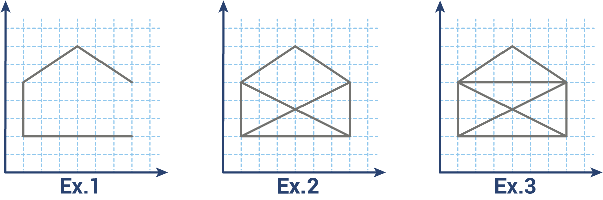

A figure is represented as a set of segments in the rectangular coordinate system. Each segment is represented as a sequence of 4 numbers: (x1, y1, x2, y2), where x1, y1 are coordinates for the first end and x2, y2 – for the second. Segments are undirected. All points in a figure are connected, so you can reach each point from any point.
You should find a path in order to draw the figure. You can pass through each segment only once and are not allowed to lift the pen. The result must be represented as a sequence of points (tuples with coordinates) in the order of how the pen moves to create the drawing. The path may be started and ended at any point. If it’s impossible to draw a figure then return an empty sequence. Let’s look at some examples:
Input: Figure segments as a set of tuples with 4 integers each.
Output: The path as a list or tuple of tuples with 2 integers each.
Example:
draw({(1,2,1,5),(1,2,7,2),(1,5,4,7),(4,7,7,5)}) == ((7,2),(1,2),(1,5),(4,7),(7,5))
draw({(1,2,1,5),(1,2,7,2),(1,5,4,7),(4,7,7,5),(7,5,7,2),(1,5,7,2),(7,5,1,2)}) == []
draw({(1,2,1,5),(1,2,7,2),(1,5,4,7),(4,7,7,5),(7,5,7,2),(1,5,7,2),(7,5,1,2),(1,5,7,5)}) == ((7,2),(1,2),(1,5),(4,7),(7,5),(7,2),(1,5),(7,5),(1,2))
Precondition:
0 < len(segments) < 30all(all(0 < x < 100 for x in s) for s in segments)
Solution:
from collections import deque
d = len(segments)
pdict = {} for seg in segments:
p1, p2 = tuple(seg[:2]), tuple(seg[2:]) pdict.setdefault(p1, set([])).add(p2) pdict.setdefault(p2, set([])).add(p1)
oddp = [p for p in pdict if len(pdict[p])%2] if oddp and len(oddp) != 2:
return []
to_search = deque([(start, p)] for p in pdict[start]) while to_search:
cur_s = to_search.popleft() cur_p = cur_s[-1][1] for p in pdict[cur_p]:
- if p == end and len(cur_s) == d-1:
- return [e[0] for e in cur_s] + [cur_p, p]
- elif (cur_p, p) not in cur_s and (p, cur_p) not in cur_s:
- to_search.appendleft(cur_s + [(cur_p, p)])